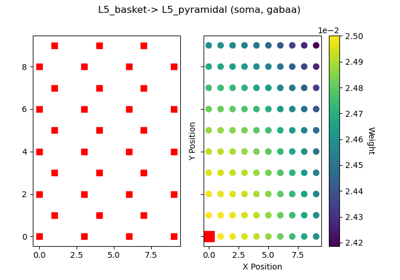

hnn_core.viz.plot_connectivity_matrix¶
- hnn_core.viz.plot_connectivity_matrix(net, conn_idx, ax=None, show_weight=True, colorbar=True, colormap='Greys', show=True)[source]¶
Plot connectivity matrix with color bar for synaptic weights
- Parameters:
- netInstance of Network object
The Network object
- conn_idxint
Index of connection to be visualized from net.connectivity
- axinstance of Axes3D
Matplotlib 3D axis
- show_weightbool
If True, visualize connectivity weights as gradient. If False, all weights set to constant value.
- colormapstr
The name of a matplotlib colormap. Default: ‘Greys’
- colorbarbool
If True (default), adjust figure to include colorbar.
- showbool
If True, show the plot
- Returns:
- figinstance of matplotlib Figure
The matplotlib figure handle.
Examples using hnn_core.viz.plot_connectivity_matrix¶

03. Modifying local connectivity
03. Modifying local connectivity